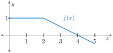
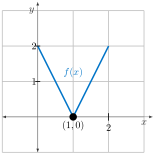
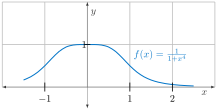
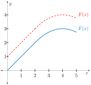
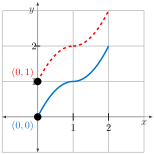

Handout Daily Prep 5.1 - Constructing Accurate Graphs of Antiderivatives
Section Overview
In this section, we once again address the question of how to construct the graph of \(f(x)\) if we know the graph of its derivative \(f'(x)\text{.}\) We also take a look at functions defined as a definite integral with a variable as a limit of integration, and see how this is a type of function that we can analyze.
Section Basic learning objectives
These are the tasks you should be able to perform with reasonable fluency when you arrive at our next class meeting. Important new vocabulary words are indicated in italics.
-
Evaluate integral functions such as \(\displaystyle A(x) = \int_{0}^{x} g(t) \ dt\) at various \(x\) values when given a simple formula or graph for \(g(t)\text{.}\)
Section To prepare for class
Complete all actions listed below. Respond to the questions highlighted with Submit.
-
Read motivating questions and the introduction to section 5.1 (up until Preview Activity 5.1.1).
-
Explore the applet Identify an Antiderivative Function to use cues given in the graph of a function in construction of an antiderivative of it. Practice as you wish.
-
-
(Optional) Watch video solution to Preview Activity 5.1.1 (7:19).
-
-
Read section 5.1.2 up to Activity 5.1.2.
-
Do Activity 5.1.2.
-
(Optional) Watch video solution to Activity 5.1.2 (8:18).
-
-
[Submit] Read section 5.1.3. For the situation presented in Figure 5.1.3, it is said that “Similarly, \(F(2)=1.5, F(3)=-0.5, F(4)=-2\text{,}\) \(F(5)=-0.5\text{,}\) and \(F(6)=1\text{.}\) Explain how it is that \(F(2)=1.5\) and \(F(3)=-0.5\text{.}\)
-
[Submit] Explore applet The Area Function. Submit answers to the two questions asked at the bottom of that page.
-
Do the following problems.
-

Figure 100. The graph of \(f(x)\text{.}\) Sketch a graph of an antiderivative \(F(x)\) satisfying -
Sketch two functions \(F\) such that \(F' = f\text{.}\) In one case, let \(F(0)=0\) and in the other let \(F(0)=1\text{.}\) Figure 101 gives a graph of \(f(x)\text{.}\)
Figure 101. The graph of \(f(x)\text{.}\) -
[Submit] Graph an antiderivative \(F\) of \(\displaystyle f(x) = \frac{1}{1+x^{4}}\) for which \(F(-1) = 0\text{.}\) Discuss maxima, minima, concavity, and intervals of increase/decrease.
Figure 102. The graph of \(\displaystyle f(x)=\frac{1}{1+x^4}\text{.}\)
-
-
Prompt Copilot “How can I use the concept of signed area under a curve to plot the antiderivative of a given graph of a function?” Follow the response you receive with the prompt “Can you repeat this but use integral signs to help me understand how definite integrals play a role in this process?”
-
Prompt Copilot “If a function \(f(x)\) is positive, decreasing, and concave up, what graphical properties should I expect an antiderivative to have?” You may get a response with the phrase horizontal inflection point. What is that?
Section After class
Solidifying the concepts discussed in class through practice is necessary to build your skills.
-
Finish (if needed) Activity 5.1.3.
-
(Optional) Watch video solution to Activity 5.1.3(a) (6:41) and solution to Activity 5.1.3(c) (4:35).
-
-
Read section 5.1.4.
-
Watch video Graphing Functions Defined as Integrals (11:37).
-
Explore the applet Area Function. The default blue function \(f\) is obviously \(f(t)=t^{2}\text{.}\) The red dotted function is \(\displaystyle F(x) = \int_{L}^{a} f(t) \ dt\) where \(a\) is determined by the slider. What is the value of this lower limit \(L\text{?}\)
-
Explore the applet Area Function. For the default function \(f(t)=(t-1)^{2}-4\) given, change the value of \(a\) to 1. Does it make sense that \(F(x)\) has a local max at -1 and a local min at 3? What about the graph of \(f(t)\) tells you that might happen?
-
Read section 5.1.5 - summary.
Section Advanced learning objectives
In addition to mastering the basic objectives, here are the tasks you should be able to perform after class, with practice:
-
Interpret the physical and graphical meaning of a function in the form \(\displaystyle A(x) = \int_{0}^{x} f(t) \ dt\text{.}\)
Section Additional suggestions
-
Watch video Accumulation Functions (4:42).
-
Watch video solution to Activity 5.1.4 (7:53).
Section Answers
-
If \(F(0)=0\text{,}\) the graph of \(F\) starts at the origin. If \(F(0)=1\text{,}\) the graph of \(F\) starts one unit higher.
Figure 103. Graphs of \(F\text{.}\) The graph for which \(F(0)=0\) is in solid blue. The graph for which \(F(0)=1\) is in dashed red. -
The solid blue curve is that of \(F(x)\) when \(F(0)=0\text{.}\) The dashed red curve is that of \(F(x)\) when \(F(0)=1\text{.}\)
Figure 104. Graphs of \(F\text{.}\) The graph for which \(F(0)=0\) is in solid blue. The graph for which \(F(0)=1\) is in dashed red. -
If \(F'(x)=f(x)\text{,}\) then note that \(F\) is always increasing since \(F'(x) > 0\) always holds. Hence, there is no maximum or minimum. Since \(f' > 0\) on \((-\infty,0)\) and \(f'<0\) on \((0,\infty)\text{,}\) we have that the same is true for \(F''\text{.}\) So, \(F\) is concave up on \((-\infty,0)\) and concave down on \((0,\infty)\text{.}\) Knowing the graph of \(F\) goes through the point \((-1,0)\) gives a good sense of how \(F\) behaves. Figure 105 shows two different views of \(F(x)\text{.}\)


Figure 105. Two different views of \(F(x)\text{,}\) an antiderivative of \(\displaystyle f(x) = \frac{1}{1+x^4}\text{.}\)